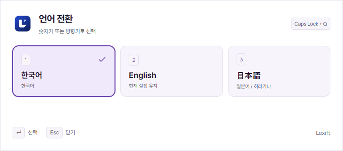
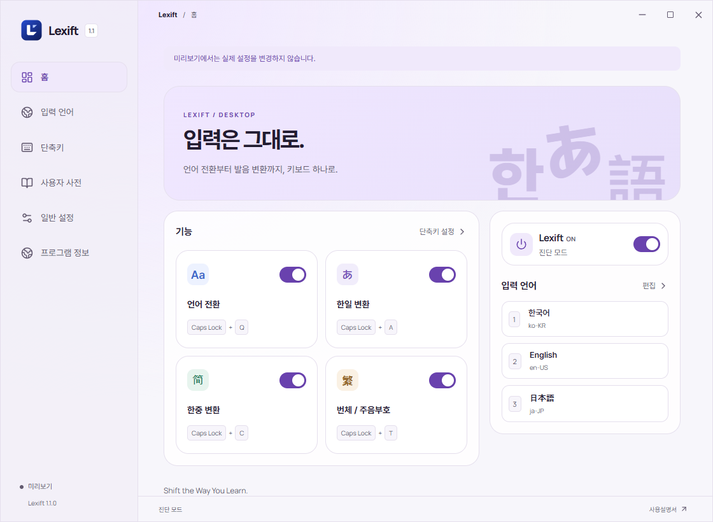

A SMALL SHIFT. A NEW LANGUAGE.
입력은 익숙하게.
언어는 자유롭게.
한 번의 단축키로 입력 언어를 바꾸고,
한글 발음 그대로 일본어와 중국어를 쓰세요.
변환 미리보기01 / 04
입력
와타시
변환
私
Caps + A
와타시私
니하오你好
중궈中國
니하오ㄋㄧ ㄏㄠ
BUILT FOR YOUR WORDS
언어를 넘나드는 방법.
01
Caps + Q
02
Caps + A
03
Caps + C
04
Caps + T
05
Caps + 1–4 / 0
06
07
입력 언어 전환
Windows에 설치한 입력기를 등록하고, 어느 창에서든 선택 메뉴를 엽니다.
한글 발음 → 일본어
와타시 → 私
한글 발음 → 중국어 간체
니하오 → 你好
번체와 주음부호
같은 키로 번체 → 주음부호 → 끄기 순서로 전환합니다.
병음 성조
영문 병음에 성조를 붙이거나 지웁니다. ke → kě
사용자 사전
이름이나 자주 쓰는 표현을 원하는 후보로 등록합니다.
단축키와 환경 설정
기능별 켜기·끄기, 키 조합, 시작 동작, 알림, 표시 언어를 설정합니다.


GET STARTED
사용 설명서
설치부터 단축키, 문제 해결까지.
Shift the way
you learn.